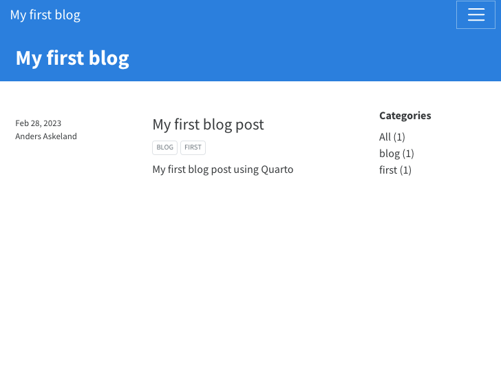
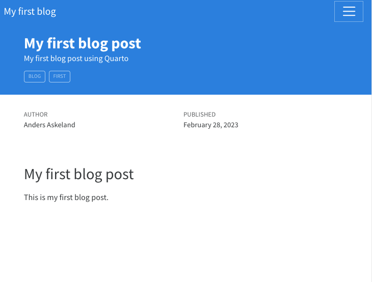

Quarto is a open-source scientific and technical publishing system that allows us to create a variety of different outputs. This includes outputs such as PDF, Word files, or HTML documents. But in addition, Quarto has a inbuilt static site generator, with great integration with R and Python code.
Creating a Quarto blog
A quarto blog can be created in one single workflow. To create a new quarto blog select File -> New Project -> Quarto blog, decide on a name and select a folder where to store it, and press Create Project.

Quarto files
After having created a Quarto blog, your RStudio will open a session that is populated with a variety of files and folders. Some of these files contain settings related to the blog, while other contains data. The files most important include:
_quarto.yml- Defines how the blog will be rendered.index.qmd- Defines the content of your blog landing page.styles.css- Defines the theme.
You might also notice a folder called posts/. As the name implies, this folder will contain our blog posts.
Create landing page
One of the first things we want to do is edit our blog landing page. For this example, we only want to change the title. The title can be changed by altering the title in index.qmd.
---
title: "My blog"
listing:
contents: posts
sort: "date desc"
type: default
categories: true
sort-ui: false
filter-ui: false
page-layout: full
title-block-banner: true
---Define blog settings
In addition to editing the landing page, we can should also define blog specific settings. These settings are all defined inside the _quarto.yml file. Lets change the website title and add a link to our GitHub repository to the navigation bar by changing the _quarto.yml file to the following.
project:
type: website
website:
title: "My blog"
navbar:
right:
- about.qmd
- icon: github
href: https://github.com/rostools/coding-club
format:
html:
theme: cosmo
css: styles.cssCreate a blog post
To create a blog post, we need to go into the posts/ folder. From here we can see that there already exists two example blog posts, “welcome” and “post-with-code”. Lets delete those and create our own post.
After deleting the example blog posts, create a new folder called "first-blog-post". Inside this folder create a .qmd file called index.qmd. Your folders should look like this:


Now, we can open the index.qmd file and start writing our first blog post.
At the very top, we need to define some post metadata in the form of YAML. We want to define a title, description, author, date, and categories. Lets add the following to our index.qmd.
---
title: "My first blog post"
description: "My first blog post using Quarto"
author: "Anders Askeland"
date: last-modified
categories:
- blog
- first
---Now we need to write our actual text body. To write our text body, we will write using Markdown, a simple and easy to use markup language.
Lets add the following text body.
---
title: "My first blog post"
description: "My first blog post using Quarto"
author: "Anders Askeland"
date: last-modified
categories:
- blog
- first
---
# My first blog post
This is my first blog post.Render the blog
Up until now, we have only been working in files and folders. But, how do we actually create a blog? This is where Quarto as a static site generate comes in, where we can use Quarto to automatically render us a blog website.
To render our blog into a website we can press the render button at the top of any index.qmd file in the main blog directory.

When having render the blog, the landing page should look like this:

When viewing our blog post we should see:

Host your blog
While we now have successfully created a blog, it is currently only stores locally on our own computer. It is not accessible from the internet.
There are a multitude of methods to host our blog. We will show you how to use GitHub (GitHub account required) to host a website in our next session.